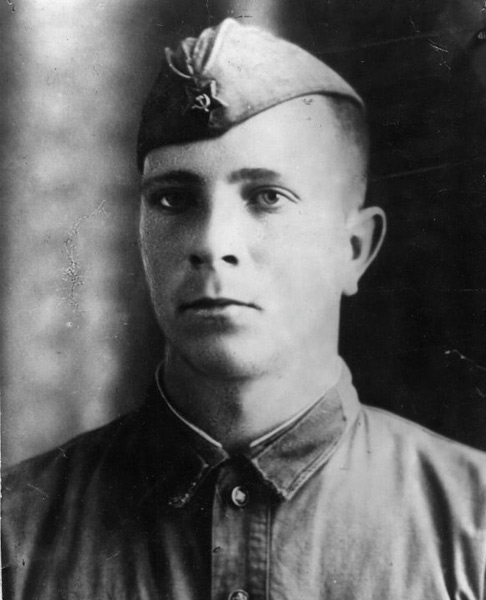

Краев Владимир Павлович — командир танка 259-го танкового батальона 143-й танковой бригады 4-й ударной армии Калининского фронта, лейтенант.
Родился 18 июля 1921 года в деревне Лекма ныне Слободского района Кировской области в семье рабочего. Русский. Некоторое время семья Краевых жила в Нагорске, а затем с 1927 года переехала в Удмуртию. Жил и учился в городах Сарапуле, Ижевске. В Воткинске окончил седьмой класс и машиностроительный техникум, работал машинистом на машиностроительном заводе.
В 1940 году призван в Красную Армию. В 1943 году окончил Харьковское танковое училище и с февраля того же года участвовал в боях с немецко-фашистскими захватчиками на Калининском фронте. Отличился в боях при освобождении Псковщины осенью 1943 года.
6 октября 1943 года во время прорыва вражеской обороны у деревень Расседенье, Большая Будница и Жуково (Невельский район Псковской области) экипаж лейтенанта Краева уничтожил противотанковую пушку и три огневые точки противника. С 6 по 10 октября его танк, действуя в составе передового отряда прошел с боями 40 километров, участвовал в освобождении 15 населенных пунктов. У деревни Марченки два часа вел бой с вражеским гарнизоном. Уничтожил 2 противотанковые пушки, 5 пулемётов, захватил 2 автомашины, освободил 170 советских граждан, угоняемых фашистами в Германию. За 4 дня прошел 40 километров, освободив 15 населённых пунктов. Будучи раненым, не покинул поле боя. Был представлен к званию Героя Советского Союза.
Пока ходили по инстанциям наградные документы, бои продолжались. 10 февраля 1944 года в одном из боёв по пути к Витебску лейтенант Краев погиб.
Похоронен в братской могиле в деревне Старое Село Витебского района Витебской области Белоруссии.
Указом Президиума Верховного Совета СССР от 4 июня 1944 года за образцовое выполнение боевых заданий командования на фронте борьбы с немецкими захватчиками и проявленные при этом отвагу и геройство лейтенанту Краеву Владимиру Павловичу присвоено звание Героя Советского Союза (посмертно).
Награждён орденами Ленина, Отечественной войны 1-й степени.
В деревне Старое Село установлен бюст Героя. Его именем был назван совхоз в Витебском районе. В городе Воткинск имя Героя увековечено на Аллее Славы. В городе Ижевск его именем названа улица, установлена памятная доска.